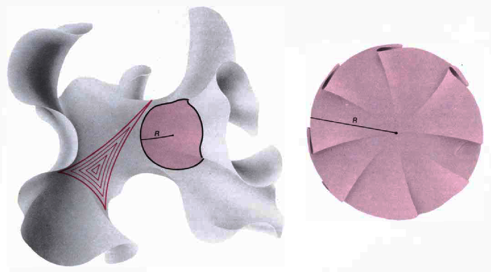
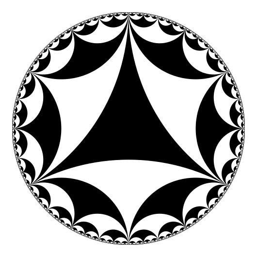
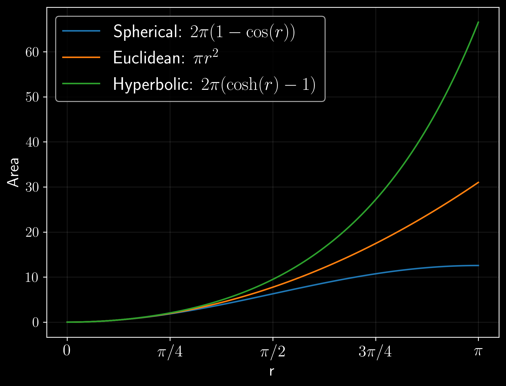

1. Introduction
This post is going to deal with what is called hyperbolic geometry, or more generally hyperbolic space. Mainly, I am writing this as a precursor to a future post about complex network embeddings in hyperbolic space, which was the main topic of my master’s thesis. During the course of my thesis, I found hyperbolic space to be very intriguing and interesting, though I did tend to limit myself to what I needed for the specific goal of network embeddings. Now, I find myself still drawn to this topic. It is a very rich and deep area of maths, and fortunately very “graphical” in nature (I really enjoy being able to “get” mathematical concepts visually). Not surprising really, since it is geometry after all. I hope to be able to convey some of the beauty of hyperbolic space.
Before we get started, I’d like to make clear the intention of the first parts of this post. Instead of diving into the more mathematical and technical aspects of hyperbolic space, which is a very common way that I’ve come across in literature and the internet, I try to lay down the foundational concepts that lead to non-Euclidean geometries (elliptic and hyperbolic), and then convey some intuition as to what makes these geometries different from the commonly called Euclidean geometry. In my experience, it makes a world of difference to have a good intuition for the geometry before getting into the technicalities.
After this, I move on to what are commonly called models of hyperbolic space, which are essentially representations of this space in Euclidean (flat) space.
2. The background of Hyperbolic space
This space is quite similar to regular Euclidean (flat) space. In fact, it comes about from relaxing just one of Euclid’s axioms: the parallel postulate. Not to pass up the chance to talk about some of history’s oldest mathematics, let’s review the axioms of Euclidean geometry.
2.1 Euclid’s postulates, or How I learned to stop worrying and love disregard the parallel postulate
Euclid laid out the foundations of geometry in his book Elements. In it, he specified five axioms, or postulates, to be used as the basis of geometry. These are:
- A straight line segment can be drawn joining any two points.
- Any straight line segment can be extended indefinitely in a straight line.
- Given any straight lines segment, a circle can be drawn having the segment as radius and one endpoint as center.
- All Right Angles are congruent.
- If two lines are drawn which intersect a third in such a way that the sum of the inner angles on one side is less than two Right Angles, then the two lines inevitably must intersect each other on that side if extended far enough. This postulate is equivalent to what is known as the Parallel Postulate.
These axioms are pretty intuitive if you sit down and think about them (or draw them on paper). They seem to be fundamental geometrical truths, and indeed the rest of geometry can be derived by combining, in ever-increasing complexity, these five axioms. However, something that bothered mathematicians for millenia was the seemingly contrived way of expressing the fifth postulate. In fact, it bothered some so much that they decided to spend a lot of time trying to find a way to derive it from the other axioms. For over two thousand years, this postulate stood up to intense scrutiny. Sometimes, a proof that it was not an axiom would be accepted for a while, but inevitably someone came along and pointed out the mistake. At some point, some people even tried proving it by contradiction, i.e. following some consequences of this postulate not being true and finding contradictions. These attempts were unsuccessful, and the postulate remained. Eventually, during the 19th century, some mathematicians took this idea of denying the postulate and ran with it. They found that what emerged were completely new geometries, just as consistent as Euclidean geometry. Due to being able to negate the postulate in essentially two ways, two new geometries came to light: hyperbolic and elliptic. Each of the three geometries can then be described broadly by their corresponding parallel postulate:
- Euclidean: For a given line and point not on the line, there exists a unique line through the point such that it does not intersect the given line.
- Hyperbolic: For a given line and point not on the line, there exists at least two lines that pass through the line and do not intersect the given line. In fact, there are infinitely many.
- Elliptic: For a given line and point not on the line, there exists no line that passes through the point and does not intersect the given line.
The way the three postulates are stated are what is known as Playfair’s axiom, which is a reformulation, but equivalent, to the original postulate.
I like how the figure below conveys the differences between parallel lines in the three geometries. In Euclidean geometry, parallel lines are always equidistant. In hyperbolic geometry, parallel lines have a certain point of closest approach, but elsewhere they are further apart (there are actually several categories of parallel lines in this geometry, but this point holds for all of them). In elliptic geometry, there is essentially no notion of parallel lines, since any two lines eventually intersect.
For a more detailed history of the parallel postulate, this Wikipedia article is a good place to start.

A simple way to convey the three geometries.
The implications of following the parallel postulate in these three different ways are quite profound. One might look at the figure above and think “but those aren’t lines, not straight lines at least”. And in Euclidean geometry that is quite true, we can intuitively detect that the lines are not straight. In the other two spaces, space itself is different, it’s shape is not the same, and what constitutes a straight line has to walk in line with this new reality. This must start to sound a bit mystical at this point…
Consider the etymological roots of the words “elliptic” and “hyperbolic”:
- elliptic: from Greek elleiptikos “defective”, from elleipein “leave out, fall short”.
- hyperbolic: from Greek hyperbolikos “extravagant”, from hyperbolē “exaggeration”. verb, hyperballein, “to throw over or beyond”.
A profound symmetry. The elliptic geometry is deficient, and the hyperbolic geometry is extravagant. What does this mean? Perhaps we can see it through their respective parallel postulates: elliptic space doesn’t quite have what it takes to make parallel lines, and hyperbolic space overshoots and lets you have too many parallel lines. Another way to see it is through the amount of space that each one takes up. Let’s go ahead and look at what we mean by “amount of space”, and see the differences between the three geometries.
2.3 Elliptic geometry
Consider the figure below. It shows a 3D sphere, with lines drawn on the 2D surface. Technically, this isn’t a sphere at all, is it? It is still a 2D image on your screen, so at best we can call it a projection of the sphere onto the 2D plane. However, since we have depth perception, and have seen a lot of round things in our lives, we can abstract and not get worked up about pedantics. I only comment this because it has helped me to separate the figures I see from the underlying models. As we will see in hyperbolic geometry, most ways of looking at it is through models that are not, in fact, the true geometry. While we are on the track of technicalities, the geometry of the sphere surface is not actually elliptic geometry, since lines intersect at two points. However, they hold many similarities, and as such spherical geometry is often called double elliptic geometry.
Coming back to our sphere, we notice a few features: some points, arcs connecting the points (and also extended beyond) and the angles between these arcs. We can assume that the first three things laid out are the points A, B and C, and the rest is a consequence of the positions of these points. Firstly, consider the fact that the arcs connecting each pair of points is intuitively the shortest path possible. Shortest lines on the sphere surface are arcs of great circles, which are circles whose center is at the center of the sphere. Actually, a great circle that goes through two points has two ways of splitting it, but generally there is one arc which is shorter. If both arcs are the same length, then the points are antipoles of each other, and as such there are actually an infinite number of great circles between them (think the prime meridians of the globe, which pass through the south and north pole). Shortest lines are called geodesics (in any geometry), and they generalize what we consider straight lines.

The surface of a 3D sphere is a 2 dimensional manifold, very similar to elliptic geometry.
The important thing to keep in mind when analyzing this space is to not forget that the actual space is the 2D surface, not the surrounding 3D space. Consider the surprising results that a being living on this surface could find (for example, humans traveling the globe if they had not known it was round). One starts walking from say, the point C, in any direction, and keeps walking in a straight line. Since in a very local point, the surface is almost flat, one would be inclined to think that the entire world is flat (as many humans believed, and some keep believing…). Surprisingly, after walking a long while, you find yourself at C again! Space closes in on itself. Of course, if you get on a spaceship and fly away, you will find that the world is round. But, if you now think about the ideal case of the 2D surface, and a 2D being living on it, with no way to look up or down, then they wouldn’t have that luxury. Their entire universe would be contained in this closed space where lines eventually meet.
Despite being a very strange world indeed, I think most people don’t have too much trouble understanding it, mostly thanks to the fact that we have seen a lot of spheres in our lives (we live on one!). On the other hand, hyperbolic geometry is a lot less intuitive, in my opinion. However, as in the case of the sphere, we will see that there are in fact real world objects that hold the same illustrative properties. I urge the reader to keep in mind the point made in the previous paragraph: one thing is the manifold/model used to describe the geometry, which can help us to visualize and understand it (in this case, the sphere), and another thing is the actual space itself, independent of the model used to describe it (the point of view of the 2D being living on the surface of the sphere).
2.4 Hyperbolic geometry
Consider the figure below. It shows a 2D surface embedded in 3D space. Again, imagine the perspective of a 2D being on this surface. If the being is small enough, they will find themselves standing on a flat plane all around them, only being able to deduce more information about the nature of their space if they move around enough. This surface is an example of hyperbolic geometry. It holds key characteristics that make it a representation of hyperbolic space, the same way that the sphere was our representation of (double) elliptic geometry. Notice that in this case, the surface doesn’t close in on itself. We could extend it as much as we wanted.
On this surface, shapes are drawn: some triangles and a circle. Let’s focus on the circle for a bit. From our point of view, we can clearly see the circle bending and stretching to fit over the surface. However, from the point of view of someone on the surface, the circle would look, well, like a circle. However, if this hypothetical person went ahead and measured the circumference, they would find that $C \neq 2\pi r$ and $A \neq \pi r^2$. We can see from the cutout on the right that the circle holds “extra” space. As for the triangles drawn on this surface, they give us an idea of what straight lines look like. By straight lines, I am again talking about geodesics.
Out of all the properties of hyperbolic geometry, this notion of having “extra” space is the one most relevant to complex network embeddings, which as I commented in the introduction will be the focus of a future post. As it turns out, this extra space allows one to accommodate information in a way that is simply not possible in Euclidean space. But, I digress.

Left: An arbitrary manifold with negative curvature throughout. Triangles and a circle are drawn. Right: The circle is “wrinkly”, and has much more surface than a normal Euclidean circle. From (“The Mathematics of Three-Dimensional Manifolds,” 1984).

Triangles with null internal angles in the Poincaré model.

Area of circles in the three different geometries.
A pretty intuitive exposition of hyperbolic space, by CodeParade.
References
Mathematics
- Thurston, W. P., & Weeks, J. R. (1984). The Mathematics of Three-dimensional Manifolds. Scientific American, 251(1), 108–121.